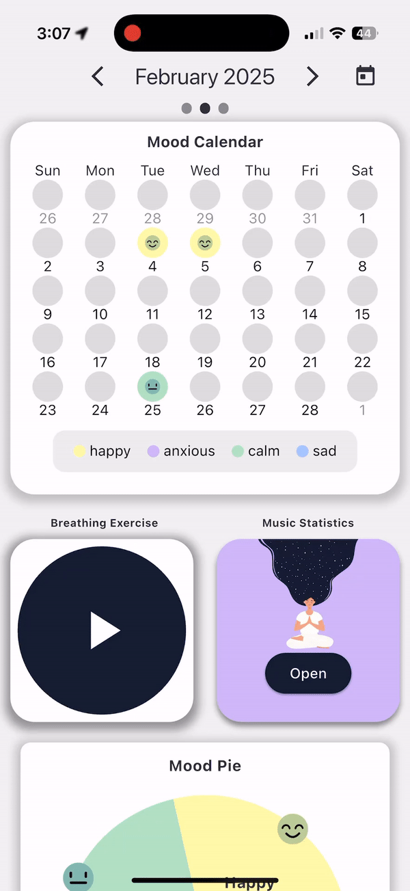
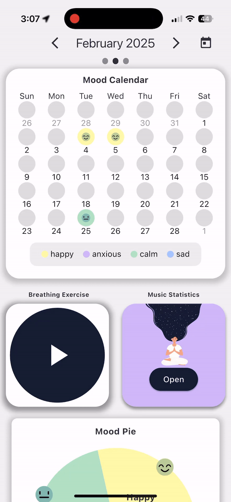

Hi, my name is Tyler Hirn
I build things that enrich peoples lives.
01. About Me
A Software Engineer with a double degree in Psychology specialized in machine learning, data analysis, as well as project design with a side specialty in designing and building user experience for the web, ios, and android platforms. Currently focusing on bridging the gap between Psychology and Technology by developing a App that uses SVC, NLP, and NN Machine learning models to predict users mood and provide personalized music recommendations.

02. Skills
Here are a few technologies I've been working with recently:
- Flutter
- Python
- Tensorflow
- Firebase
- Pandas + Excel
- HTML / CSS / JavaScript
02. Where I've Worked
Fullstack Developer @ Campus Web Solutions
January 2021 - August 2022, Auburn, AL
- Developed and maintained several applications utilizing a variety of technologies, including .NET, Javascript, CSS, and MySQL in an Agile environment.
- Streamlined ticket logistics for the entirety of Auburn facility staff by developing a custom web application that processed over $100,000 worth in football ticketing every season.
- Developed an election web application for the election process of Auburn University's Board of Directors with a team of 4 developers under 1 month, resulting in an efficient election process.
- Collaborated closely on Auburn's pharmacy scheduler, COVID vaccine plan, and Auburn facility staff healthcare scheduling software
- Implemented a student elections logistics display in an ASP.NET Core MVC application, personally approved by Alabama Gov. Ivey, that showed concurrent election progress and status for over 30,000 voters.
Director of Housing Operations @ Delta Chi at Auburn University
January 2019 - January 2021, Auburn, AL
- As a Director of Housing Operations, reduced the time required to assign 50 chores weekly from 1 hour to 5 minutes by creating a chore schedule generator.
- Lead a group of more than 10 and designed multiple furnishings for the house while staying under budget and increasing in-house interactions.
- Cut costs by 23% across the board for household supplies.
Founder @ Tech Kid Air
May 2016 - August 2019, Central Alabama
- Oversaw all aspects of business while leading a team of 3 to produce many films showcasing customer housing and land using Final Cut Pro, many of which were showcased on Legacy New Homes website, resulting in increased engagement and interest from potential buyers. Take a look at a video showcase!
- Utilized effective marketing, business, and communication skills to proactively reach out to real estate companies and secure new contracts, resulting in a consistent stream of freelance work and increased revenue.
03. Some things I've built.
Core Music
An application that combines advanced Machine Learning techniques with Natural Language Processing to enhance personal journaling experiences with integrated personal music recommendations reflecting their journal sentiment. Check it out!

 

- Implemented Natural Language Processing (NLP) to analyze user journal entries, effectively extracting the underlying sentiment.
- Developed a recommendation system, leveraging the sentiment data to personalize user experience.
- Integrated Spotify API to fetch user's music data, creating a personalized pool of music.
- Designed and implemented a Gradient Boosting (XGBoost) model to analyze the audio features of songs, predicting their mood context.
- Utilized XGBoost outcomes to match user's sentiment with mood-based music, enhancing music recommendations.
Skills:
- Machine Learning
- Natural Language Processing
- XGBoost
- Spotify API
- Python
Spotify Usage Dashboard
In today's digital age, music streaming platforms like Spotify have become an integral part of our
daily lives. This project delves into personal Spotify data to uncover intriguing insights into
listening habits. Using Tableau, the dashboard visualizes various metrics such as total time played,
favorite artists, and track preferences, providing a comprehensive view of music consumption
patterns.
This analysis not only showcases my proficiency in data visualization but also underscores the value
of personal data in understanding user behavior and preferences.
View the Dashboard
Skills:
- Tableau
- Excel
- Data Visualization
- Data Analysis
In today's digital age, music streaming platforms like Spotify have become an integral part of our daily lives. This project delves into personal Spotify data to uncover intriguing insights into listening habits. Using Tableau, the dashboard visualizes various metrics such as total time played, favorite artists, and track preferences, providing a comprehensive view of music consumption patterns. This analysis not only showcases my proficiency in data visualization but also underscores the value of personal data in understanding user behavior and preferences.
Skills:
- Tableau
- Excel
- Data Visualization
- Data Analysis
Core

An app that combines machine learning and natural language processing to help you find patterns in
your mood.
Skills:
- Flutter
- FireBase Firestore
- TensorFlow
- Custom SVC models
- Excel + Pandas
An app that combines machine learning and natural language processing to help you find patterns in your mood.
Skills:
- Flutter
- FireBase Firestore
- TensorFlow
- Custom SVC models
- Excel + Pandas
04. What's Next?
Get In Touch
Currently I am looking for opportunities that benefit human wellbeing, especially those related to machine learning, Psychology, and data analytics. Whether you just want to say hi, or have a question or collaboration, I will always try my best to get back to you! Check out my resume. Say Hello